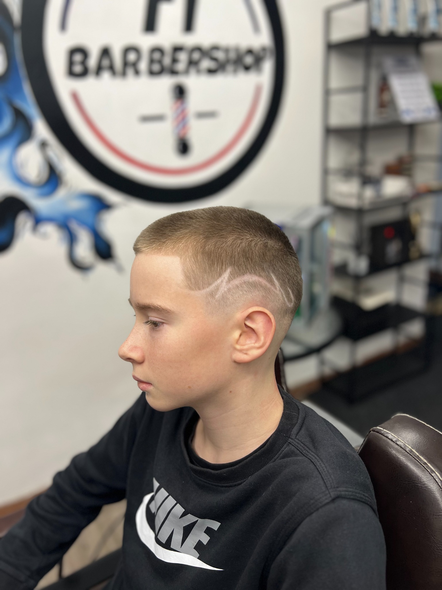
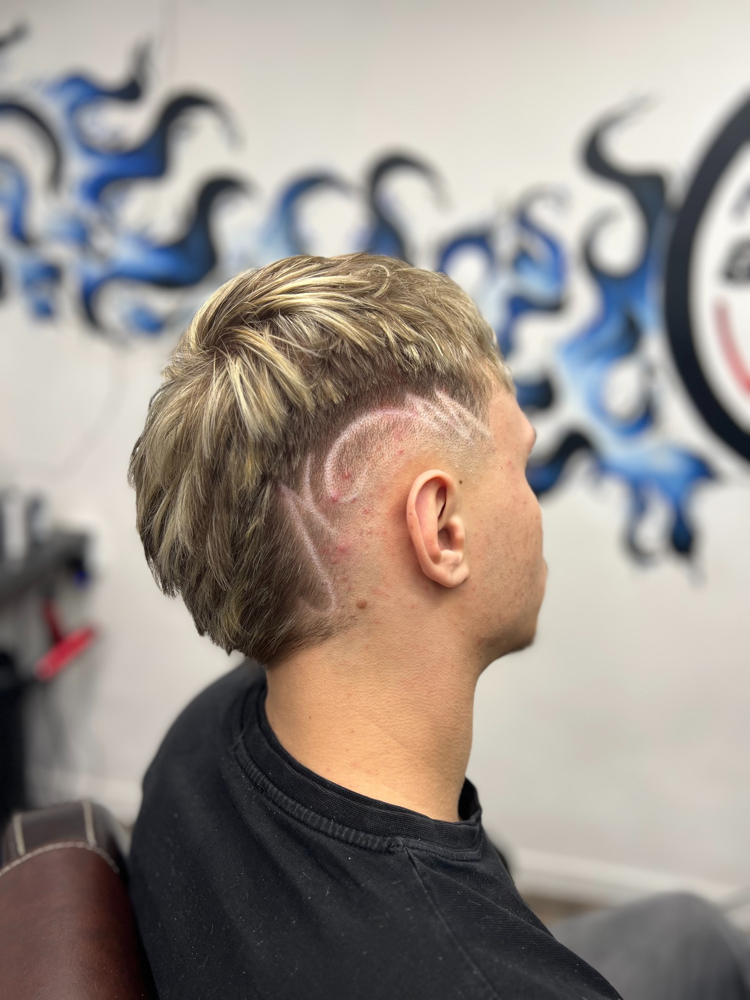
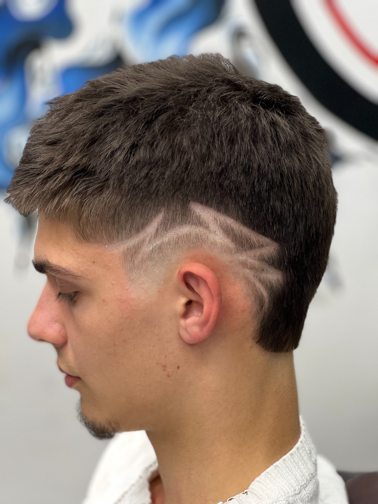
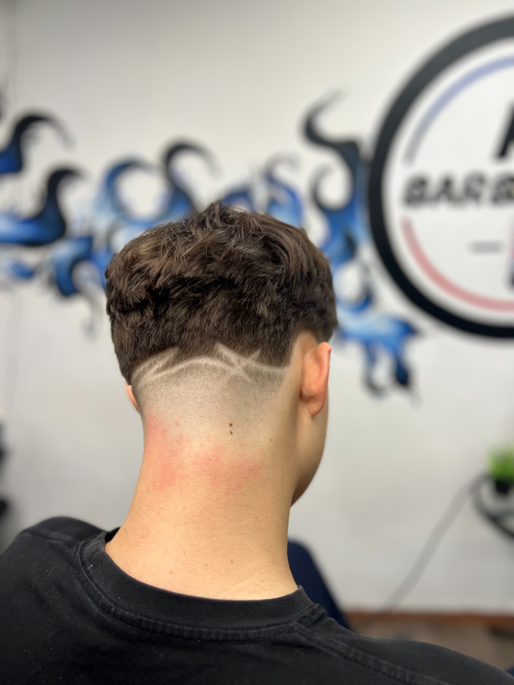
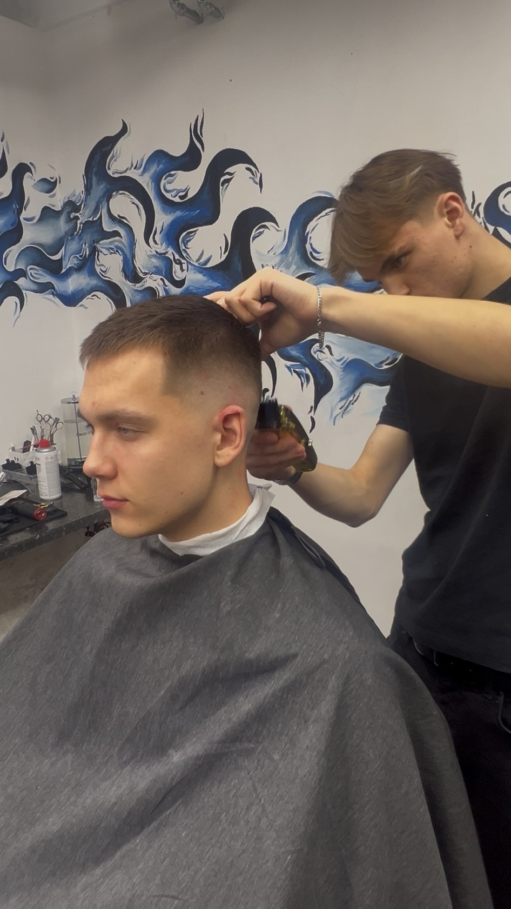

Meeste juukselõikus
Kuju, tekstuur ja viimistlus vastavalt sinu juustele ning stiilile.
TÄPNE TÖÖ · PUHAS STIIL · HEA VIBE
Barberjax ühendab klassikalise barber-kultuuri värske ja kaasaegse stiiliga. Tuled lõikusele, lahkud enesekindlamalt.

VALIK TEHTUD TÖID
Iga lõikus on natuke erinev. Mõte on lihtne: kuju, mis sobib näoga, ja viimistlus, mis näeb hea välja ka pärast barbershopist lahkumist.





MIDA TEEME
Vali suund, kirjelda mida tahad ja ülejäänu paneme koos paika. Kui sa täpselt ei tea, mis sulle sobib, aitame valida.
Kuju, tekstuur ja viimistlus vastavalt sinu juustele ning stiilile.
Puhas üleminek, teravad detailid ja loomulik sobivus ülejäänud lõikusega.
Selged piirid, sobiv kuju ja korrektne lõpptulemus.
Graafilised jooned ja detailid, kui tahad tavalisest lõikusest veidi rohkem.

MEIST
Barberjax ei ole koht, kus tehakse lihtsalt kiiresti masinaga küljed lühikeseks. Iga lõikus algab sellest, milline stiil sulle päriselt sobib.
Inspiratsiooni võtame modernsetest fade'idest, klassikalisest barber-kultuurist ja tänapäeva tänavastiilist. Tulemus peab olema puhas, kantav ja sinu moodi.
Tule lõikusele ↗
VALMIS UUEKS LÕIKUSEKS?
Lisa siia oma tegelik broneerimislink, telefon või Instagram. Praegu viivad nupud kontaktiploki juurde ja neid on lihtne ühe reaga ära muuta.